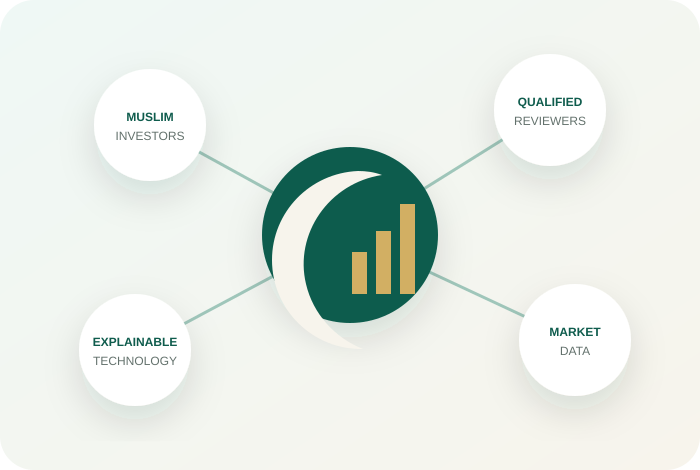

Evidence before labels
A status should lead to reasons, sources, dates, and history.
HilalMarkets combines transparent Sharia screening with explainable market monitoring so self-directed Muslim investors can know what they may consider, when it matters, and why.

Muslim investors often move between a screening site, a charting platform, alert tools, and scattered project updates. HilalMarkets is designed to unite that fragmented journey without turning the product into a signal provider or automatic trading system.
A status should lead to reasons, sources, dates, and history.
Technology supports qualified review; it does not replace it.
Users should know why an alert happened—or did not.
No guaranteed returns, false certainty, or hidden disagreement.
More active than a passive holder, but not trying to become an algorithmic or institutional trader. The user values understandable defaults, evidence, and control.
The focused launch scope is liquid crypto spot assets, English and Arabic, web and Telegram, and a small evidence-backed universe. Stocks and local markets should follow only after licensed data and credible Sharia-governance workflows are available.
Illustrative roadmap visualization—not an externally verified progress claim.